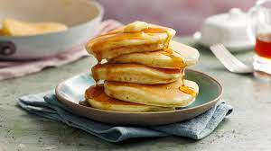

Odin Recipes

American Pancakes
Fluffy pancakes with a hint of ginger for a
special treat at breakfast time
Ingredients
- 100g Plain Flour
- 25g Corn Flour
- 35g Brown Sugar
- 2/3rds Cup Of Milk
- 1 Egg
- 2 Tablespoons of Ginger
- Honey
Steps
- Mix flours, sugar and ginger together and make a well
- Beat egg
- Add egg and milk to mixture and mix well
- (optionally let sit for 30 minutes)
- Pour into medium heat and sprinkle with brown sugar
- When bubbles have formed on top flip
- Make sure they're properly cooked well brown
- Spread honey on top